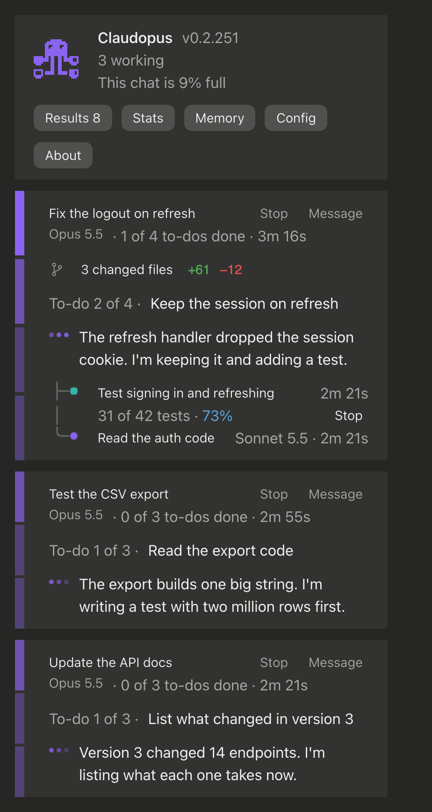
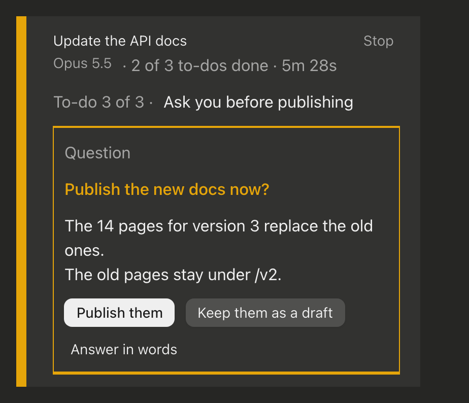

Claude Code, with eight arms
Do 3× more with Claude Code, at the same time.
Claude Code does one thing at a time, so you ask, then wait. With Claudopus you keep asking.
/plugin marketplace add dimka3553/claudopus/plugin install claudopus@claudopusTwo lines at the Claude Code prompt. Free, MIT, macOS and Linux.
The problem
Three requests. Two of them wait.
With Claudopus, each message starts its own task, and tasks work side by side. The chat stays free, and small, for your next one.
Claude Code alone
All done
With Claudopus
All done
Proof
19½ days of work in 6½.
The author's own Stats tab, 29 Oct to 21 Nov 2026.
- Task time
- Real time
- 2.99×task time over real time
- 825tasks done
- 18at once, at most
- 1m 18schat time per message
- Quiet gaps over 15 minutes are left out.
- It isn't 3× the output, less typing or cheaper, and it's Claudopus's own count.

What changes
One panel shows every task.
Each card shows its to-dos, what it's doing now, and its helpers and commands. Stop ends one.


Questions come to the top.
Each has buttons to answer and never times out. A sound and a notification name its task.
Nothing reaches main until you press.
Each task changes code in its own worktree and branch, and waits for Release it.


You decide when it's done.
A finished task says Delivered until you press Mark as done. Give feedback puts it back to work.
Nothing gets buried.
Results keeps what every finished task found, newest first, as plain files on your machine.

Real pictures of Claudopus 0.2.251, with made-up tasks.
Two lines to try it. One turns it off.
/plugin marketplace add dimka3553/claudopus/plugin install claudopus@claudopus/claudopusopens the panel/plugin disable claudopus@claudopusturns it off.- It needs a recent Claude Code and adds its author's working principles to every chat.
In the Claude desktop app
Click + next to the prompt box, then Plugins. Add a marketplace with dimka3553/claudopus, then add the plugin named claudopus.
From a shell
claude plugin marketplace add dimka3553/claudopusclaude plugin install claudopus@claudopusIf the short form fails over SSH
Use the full address in its place:
https://github.com/dimka3553/claudopus.git
Good to know
It uses tokens faster
Five tasks at once use them about five times as fast, so limits run out sooner.
It adds its author's principles
Short rules that shape how Claude answers. Read the principles.
It can ask for your Mac's password
Only for an admin command you allow. Never saved.
What it needs
Claude Code (tested with 2.1.325), Opus and Sonnet, and jq for Stats.
Where it works
macOS and Linux, in a terminal or the desktop app. Not Windows under WSL.
You can turn it off
uninstall removes it, and your memory folder stays.